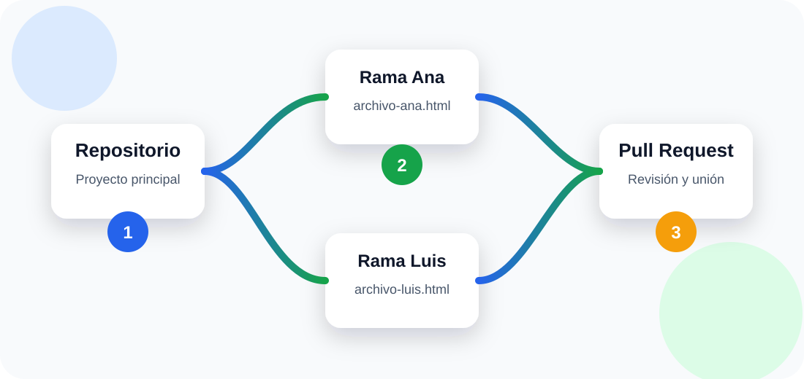
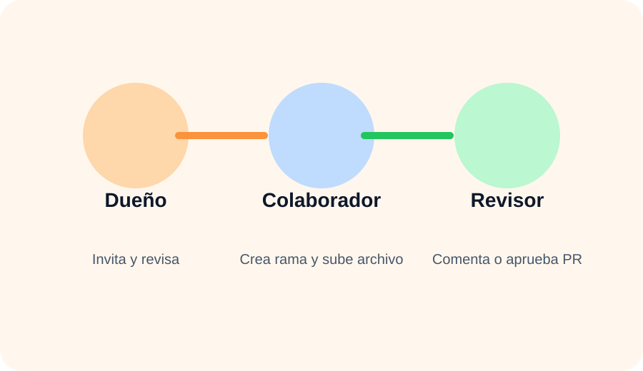
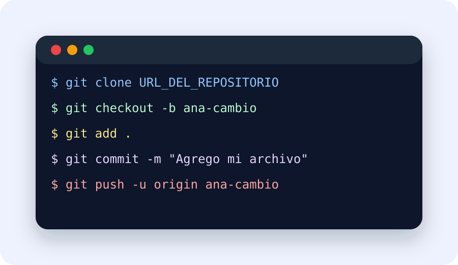
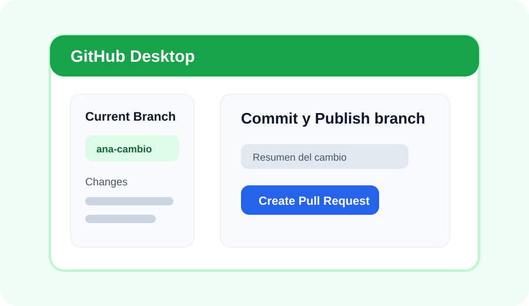
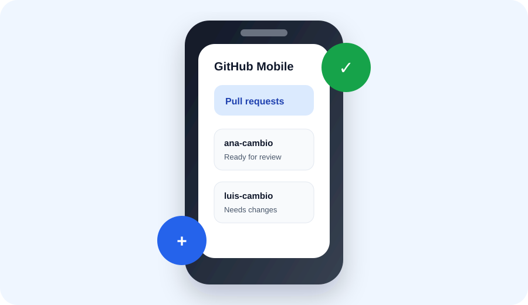

Objetivo de la práctica
Que los estudiantes aprendan el flujo básico de colaboración en GitHub: ser agregados como colaboradores, crear una rama propia, realizar cambios sin afectar la rama principal, subir sus archivos y solicitar revisión por medio de un Pull Request.
Flujo general de trabajo

- El dueño crea el repositorio y agrega a sus compañeros como colaboradores.
- Cada colaborador clona el repositorio o lo abre desde GitHub Desktop.
- Cada estudiante crea una rama con su nombre o tarea.
- El estudiante agrega o modifica un archivo.
- Realiza commit y sube la rama a GitHub.
- Crea un Pull Request para solicitar que sus cambios sean revisados.
- El dueño o revisor revisa, comenta, solicita cambios o aprueba.
Agregar colaboradores
Este paso lo realiza el dueño del repositorio.
Roles recomendados

- Dueño: crea el repositorio, invita colaboradores y revisa Pull Requests.
- Colaborador: crea una rama, sube su archivo y solicita revisión.
- Revisor: comenta, aprueba o solicita correcciones.
Opción A: hacerlo desde consola o Git Bash

Esta opción es ideal para que los estudiantes practiquen comandos básicos de Git.
Comandos paso a paso
1. Clonar el repositorio
git clone URL_DEL_REPOSITORIO
cd nombre-del-repositorio2. Crear una rama propia
git checkout -b nombre-estudianteEjemplo:
git checkout -b ana-presentacion3. Crear o copiar el archivo
echo "Hola, soy Ana y este es mi aporte" > ana.html4. Verificar cambios
git status5. Agregar y guardar cambios
git add .
git commit -m "Agrego archivo de Ana"6. Subir la rama a GitHub
git push -u origin ana-presentacionOpción B: hacerlo desde GitHub Desktop

GitHub Desktop permite trabajar con Git de forma visual, sin escribir tantos comandos.
Pasos desde GitHub Desktop
Opción C: usar GitHub Mobile

GitHub Mobile es útil para trabajar desde el celular, especialmente para revisar Pull Requests, recibir notificaciones, comentar cambios, aprobar revisiones y hacer correcciones pequeñas.
Instalación y acceso
Crear Pull Request desde GitHub Mobile
Cuando la rama ya fue subida desde consola o GitHub Desktop, también se puede crear el Pull Request desde el celular.
Revisar y comentar desde GitHub Mobile
Trabajo desde celular usando navegador
Si un estudiante no tiene computadora, puede intentar trabajar desde el navegador del celular entrando a github.com. En algunos celulares conviene activar sitio de escritorio para ver mejor las opciones de ramas, edición de archivos y creación del Pull Request.
Crear el Pull Request
El Pull Request es la solicitud para que los cambios de una rama se revisen antes de unirlos a la rama principal.
| Elemento | Qué debe colocar el estudiante | Ejemplo |
|---|---|---|
| Base branch | Rama principal donde se unirán los cambios | main |
| Compare branch | Rama del estudiante | ana-presentacion |
| Título | Resumen breve del trabajo realizado | Agrego archivo de Ana |
| Descripción | Explicación de lo que se agregó | Subí mi archivo HTML con mi aporte al proyecto. |
| Revisor | Dueño del repositorio o docente | Profesor / coordinador del equipo |
Descripción sugerida para el Pull Request
## Descripción
Agregué mi archivo personal al proyecto.
## Cambios realizados
- Creé mi rama de trabajo.
- Agregué el archivo ana.html.
- Subí los cambios al repositorio.
## Solicitud
Solicito revisión para unir mis cambios a la rama main.Actividad práctica para estudiantes
Modalidad: trabajo grupal de 4 a 5 estudiantes.
Producto final: repositorio en GitHub con un archivo por estudiante y Pull Requests revisados.
- Un estudiante crea el repositorio llamado practica-github-equipo.
- El dueño agrega a sus compañeros como colaboradores.
- Cada colaborador crea una rama con su nombre.
- Cada estudiante crea un archivo con su nombre, por ejemplo: maria.html, juan.html.
- Dentro del archivo debe escribir una pequeña presentación personal y el rol que tuvo en el equipo.
- Cada estudiante debe hacer commit y subir su rama.
- Cada estudiante debe crear un Pull Request.
- El dueño o revisor debe comentar o aprobar cada Pull Request.
- Al final, deben unir los Pull Requests a main.
Archivo de ejemplo
<!DOCTYPE html>
<html lang="es">
<head>
<meta charset="UTF-8">
<title>Aporte de Ana</title>
</head>
<body>
<h1>Hola, soy Ana</h1>
<p>Mi aporte fue crear mi rama y subir este archivo.</p>
</body>
</html>Lista de cotejo
- El estudiante aceptó la invitación como colaborador.
- Creó una rama con nombre claro.
- Agregó su archivo correctamente.
- Realizó commit con mensaje descriptivo.
- Subió su rama a GitHub.
- Creó el Pull Request.
- Participó en revisión o comentario de un PR.
- Usó GitHub Mobile para revisar, comentar o dar seguimiento.
Rúbrica de evaluación — 10 puntos
| Criterio | Puntaje | Descripción |
|---|---|---|
| Colaboración en GitHub | 2 pts | Acepta invitación, identifica el repositorio y participa correctamente. |
| Creación de rama | 2 pts | Crea una rama propia con nombre claro y no trabaja directamente en main. |
| Archivo agregado | 2 pts | Agrega un archivo con contenido correcto y relacionado con la actividad. |
| Commit y push | 2 pts | Realiza commit con mensaje claro y sube correctamente la rama. |
| Pull Request y revisión | 2 pts | Crea el Pull Request y participa en revisión, comentario o seguimiento desde web, Desktop o Mobile. |
Error: estoy en main
Crea una rama antes de modificar archivos:
git checkout -b mi-ramaError: no puedo subir
Verifica que aceptaste la invitación como colaborador y que tienes permiso de escritura.
Error: hay conflictos
Actualiza tu rama con la principal y revisa los archivos marcados como conflicto antes de hacer commit.